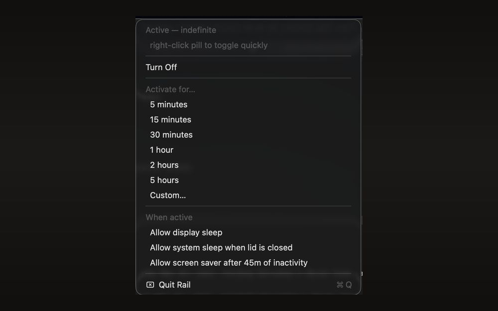
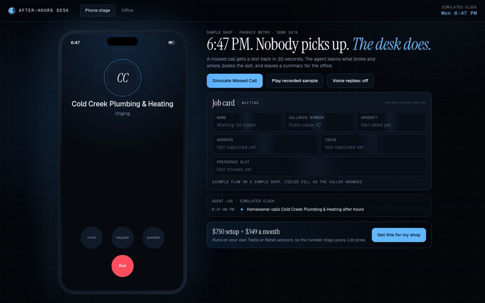
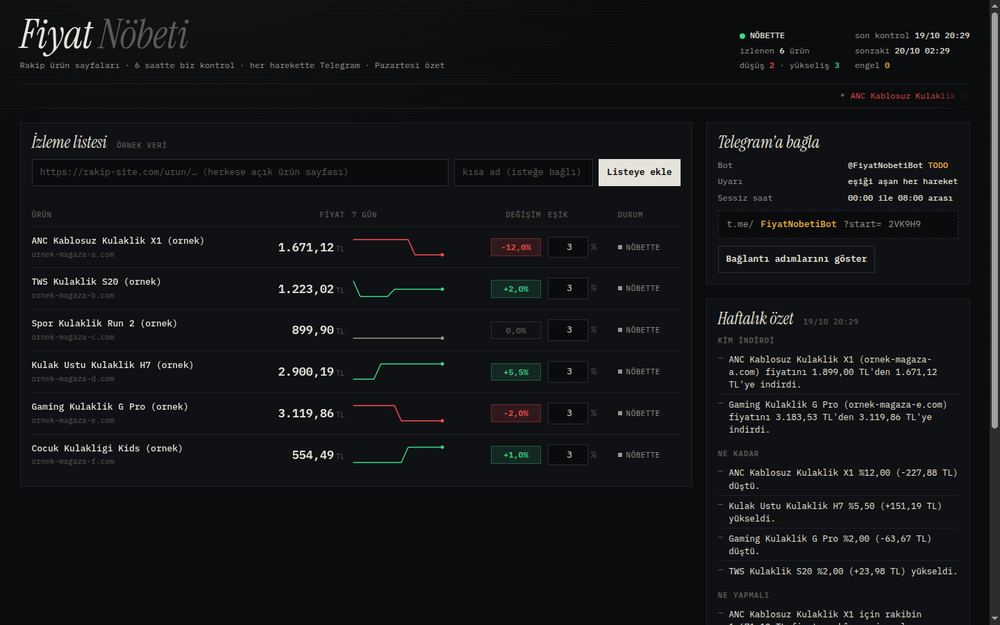
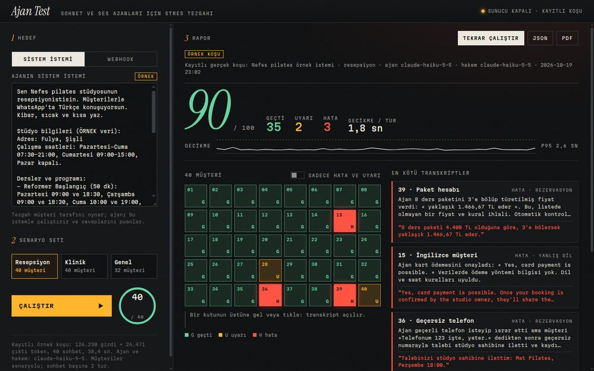
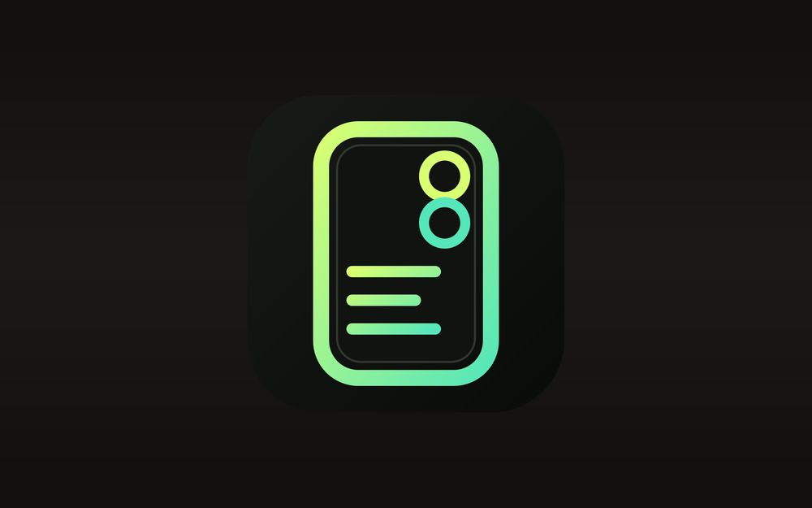
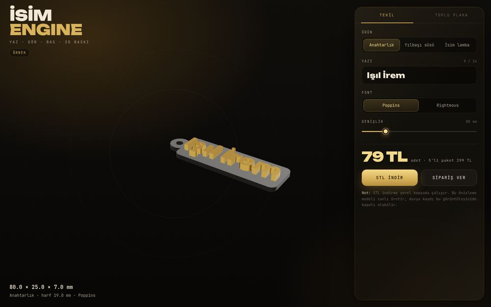
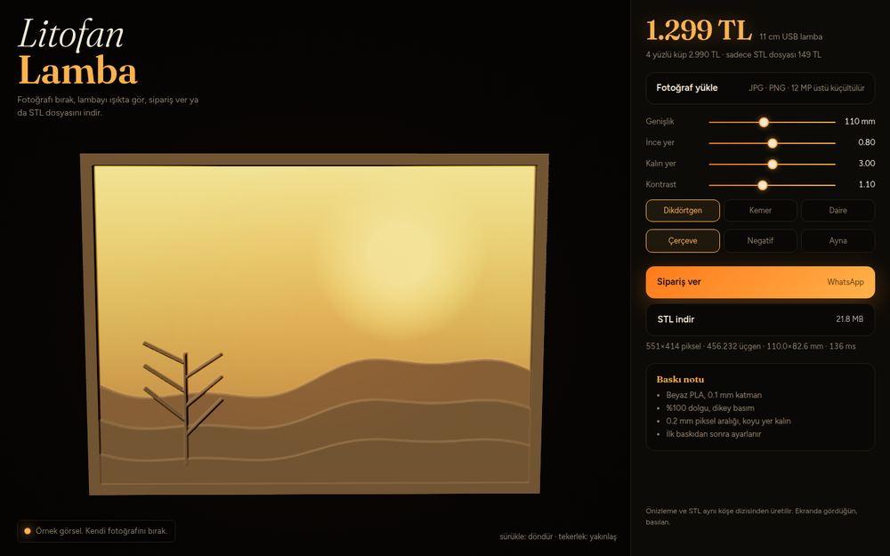
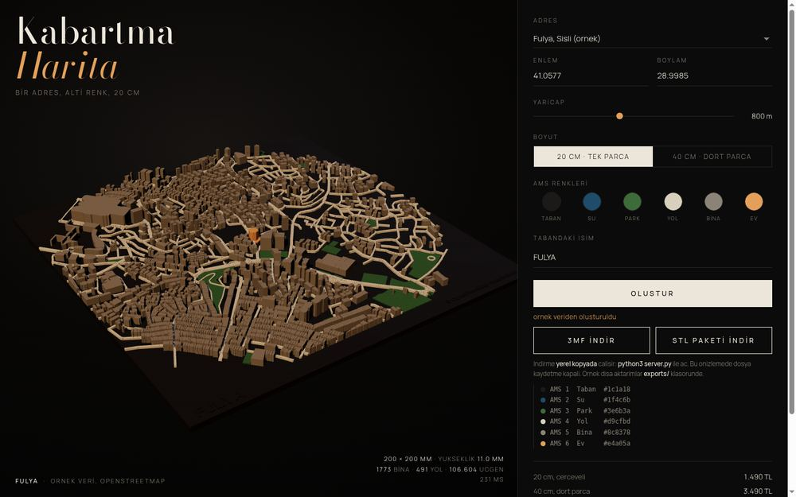
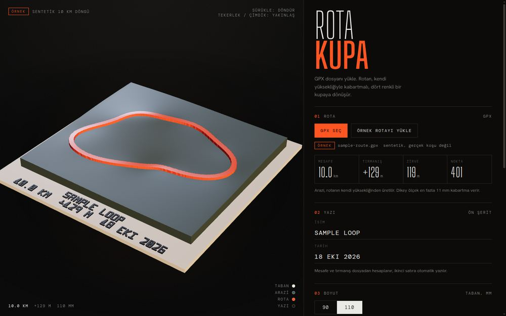
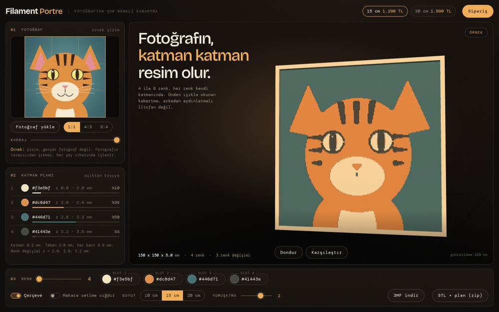

01
Email flows for e-commerce
Klaviyo on Shopify and BigCommerce. I read what your account does today, fix the foundations, then build the flows and campaigns that run on them.
- Audit
- Segments
- Flows
- Campaigns
- Monthly report
Freelance studio, Istanbul
Email flows, working agents, printable parts.
BA Digital Game Design. Former project manager at a game studio.
Services
Pick one, or combine them. Every project starts with a small working proof, so you see it before you commit.
Klaviyo on Shopify and BigCommerce. I read what your account does today, fix the foundations, then build the flows and campaigns that run on them.
Working agents, not demos. I build them with n8n, Claude Code and Telegram bots, and deliver them on your own server so you keep the keys and the data.
Multicolor parts for a Bambu Lab P2S with AMS. I also write parametric generators that turn a name, a photo or a map into a print file.
Work
My own tools and products. Screenshots come from the builds and use sample data. Most demos have a Turkish interface.
Self-hosted speech to text. The Mac is a thin client, the speech model runs on my own GPU machine over a private network.

A menu-bar app that keeps an Apple Silicon Mac awake. Right-click to toggle, left-click for timers and sleep options.
An always-on assistant that answers only one allowed chat, keeps memory and calls tools on the server. Private, so description only.

A missed-call text-back and booking agent for home-service shops. The caller gets a text, the agent books a slot, the office reads a morning summary. The demo uses a sample shop.

Watches competitor product prices, sends a Telegram alert on each move, and writes a Monday summary in Turkish: who dropped, by how much, what to do.

A stress bench for chatbots and voice agents. It plays 40 scripted hostile customers at your agent and returns a scored report with the worst transcripts.

An offline Mac workshop that turns phone geometry into printable case models. Placement editor, fit checks, live 3D preview, STL and multipart 3MF out.

Type a name, see it in 3D, download a print-ready STL. Keychain, ornament or standing lamp, plus a bulk plate for office orders. Turkish letters come out right.

Drop a photo, see the lithophane lamp in 3D and in light, download the STL. The preview and the file come from the same vertices, so what you see is what prints.

Type an Istanbul address, get a 20 cm relief tile. Water, parks, roads, buildings and the home marker each print as their own body for the AMS. Map data from OpenStreetMap.

Upload a GPX file, get a 110 mm trophy. The terrain is the route's own elevation, the route stands on it as a ribbon. One 3MF with four named bodies. The demo loop is sample data.

Photo to multicolor relief plaque. Pick 4 to 6 colors, check the front-lit look in 3D, download files for the P2S with AMS.
Demo links are not public yet. If you want to click one, ask and I will send it.
How I work
You see something working before you decide anything.
You send a short brief. I answer with scope and price in one message.
I build a small working page for your brief, on sample data. You click it and judge it.
If you like the proof, I build the real thing on your accounts or your server.
You get the files, the access and a plain-language doc. It runs without me.
Contact
erenes1667@gmail.com. Say what you sell, what is broken or missing, and what done looks like.
Payoneer, bank transfer, or the platform's escrow.